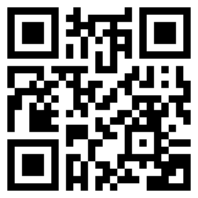

Saturn - The Ringed Planet
Saturn is the sixth planet from the Sun and is best known for its spectacular ring system made of ice and rock particles. It’s a gas giant like Jupiter and has over 80 moons, including Titan, which has a dense atmosphere and liquid lakes. Saturn’s majestic rings and enormous size make it a striking object in the night sky.

Scan to explore Saturn in Augmented Reality